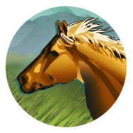
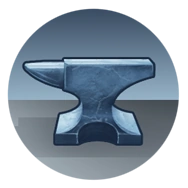

Unicamente conceptos básicos
En esta guía unicamente se cubrirán los conceptos básicos para poder jugar correctamente.


En esta guía unicamente se cubrirán los conceptos básicos para poder jugar correctamente.
Sid Meier's Civilization V es un videojuego de estrategia por turnos desarrollado por Firaxis Games y distribuido por 2K Games, y el quinto de la serie Civilization. Fue publicado en Estados Unidos el 21 de septiembre de 2010 y en Europa el 24 de septiembre del mismo año.

Aunque Civilization V está inspirado en el desarrollo histórico de civilizaciones, no es completamente realista. El juego simplifica y adapta aspectos de la historia y la cultura para crear un sistema equilibrado y entretenido. Por ejemplo, las civilizaciones avanzan a través de las épocas de forma uniforme, sin considerar diferencias geográficas o culturales reales.

En Civilization V, puedes ganar de varias maneras: mediante Dominación, conquistando las capitales enemigas; Ciencia, enviando una nave espacial a Alpha Centauri; Cultura, influenciando a todas las civilizaciones; Diplomacia, obteniendo el liderazgo mundial en la ONU; o por Puntuación, siendo la civilización más avanzada cuando se acaba el tiempo.

La comida controla el crecimiento de la ciudad. Del ingreso total de alimentos de una ciudad se resta una porción que es consumida por sus ciudadanos. El exceso de producción de alimentos hará que la ciudad crezca.
La producción de una ciudad determina cuánto tiempo lleva construir edificios y unidades en tu ciudad. Construir un cuartel costará 75 martillos. A 5 martillos por turno, se necesitarán 15 turnos para construirlo.
El oro no es utilizado directamente por la propia ciudad, sino que los ingresos se suman al imperio. Estos ingresos cubren los costes de mantenimiento de tus fuerzas militares, carreteras y edificios.
La cultura es esencial para desbloquear políticas sociales, expandir fronteras e influir en otras civilizaciones, ayudándote a lograr la victoria cultural.
Los recursos estratégicos son aquellos que son de importancia económica y militar para tu imperio. Ciertas unidades y edificios militares requieren un recurso estratégico antes de poder ser construidos. Por ejemplo, un Jinete requiere 1 recurso de caballos, mientras que una Fábrica requiere 1 recurso de de carbón.

Los caballos son necesarios para todas las unidades montadas en el juego (excepto para el Elefante del Bosque Africano, el Arquero a Caballo, el Elefante de Naresuan, el Carro de Guerra y el Elefante de Guerra), por lo que necesitarás bastante este recurso. Trate de asegurar el acceso a al menos una o dos fuentes de Caballos Caballos; Alternativamente, asegúrese de que tengan un socio comercial estable.
El hierro se encuentra prácticamente en todas partes, lo que lo convierte en un recurso de acceso relativamente fácil. Aún así, es más común en lugares apartados, como tundras y terrenos con nieve. El hierro se extrae a través de las minas.
El carbón es el primer recurso estratégico nuevo que está disponible después de mucho tiempo, con solo caballos caballos y hierro hierro. Al carbón se accede con una mina y se usa para dos cosas muy específicas: los acorazados, que son una transición entre los barcos con velas y los barcos modernos basados en motores; y la construcción de fábricas.

El petróleo es el primer recurso estratégico del juego tardío (revelado por la tecnología de Biología), y es bastante único por varias razones. En primer lugar, es el único recurso estratégico que se encuentra tanto en tierra como en mar. En segundo lugar, es el único recurso que requiere dos nuevas mejoras únicas para acceder: el pozo de petróleo para las fuentes terrestres y la plataforma marina para las basadas en el mar.

El aluminio se descubre casi al mismo tiempo que el petróleo, con la tecnología de electricidad, las fuentes de aluminio son más comunes que las fuentes de petróleo las fuentes de petróleo, se encuentran en los lugares más convencionales como regla general, y también son mucho más fáciles de encontrar que las fuentes de carbón.

El uranio es el último recurso estratégico del juego, descubierto con la tecnología de la Teoría Atómica. Su uso se encuentra en la Era Atómica pues te permite construir bombas atómicas y misiles nucleares. El uranio también permite la construcción de la Planta Nuclear, un edificio que ayuda a acelerar la producción de la ciudad.

Terreno es un término que describe la tierra en Civilization V y sus características. El terreno está dividido en mosaicos hexagonales, que representan distintas áreas del terreno. Las unidades aparecen en el terreno y se ven afectadas por él a medida que se mueven y luchan en él, y los ciudadanos de las ciudades pueden trabajar las casillas para producir comida, produccion, oro, cultura o fe. Los imperios pueden reclamar el terreno como parte de sus fronteras.
El terreno base, junto con la presencia o ausencia de ciertas características del terreno, se utilizan para clasificar los mosaicos en varios tipos diferentes. Estas categorías se utilizan a menudo en la información y la información sobre herramientas del juego


La guerra contra otra civilización puede declararse de dos maneras diferentes, o puedes encontrarte en el lado receptor de la declaración de un enemigo. Tú (o ellos) puedes declarar la guerra a través de la pantalla diplomática, o simplemente puedes caminar hacia el territorio de otra civilización o atacar a una de sus unidades; ambas cosas resultarán automáticamente en una guerra (ver más abajo). Independientemente de cómo comience una guerra, todos los acuerdos comerciales y diplomáticos con el otro lado se cancelan automáticamente al entrar en guerra. Además, todos los aliados de cada bando se declaran automáticamente la guerra entre sí. Tenga en cuenta que cuando declara la guerra a una ciudad-estado que está aliada o bajo la protección de otra civilización, ¡no entra automáticamente en guerra con esa civilización! Sin embargo, protestarán ruidosamente por su agresión y las relaciones diplomáticas con ellos se verán afectadas.
Esta es la forma oficial de declarar la guerra, cuando se informa al otro lado por medios diplomáticos. Puedes hacerlo desde el panel de Diplomacia, seleccionando la entidad a la que deseas declarar la guerra y luego haciendo clic en la opción correspondiente. Cuando declaras la guerra a una civilización, aparecerá una pantalla de confirmación que te informará del estado actual de las relaciones comerciales entre tú y ellos, y también de sus aliados.
Simplemente puedes ordenar a una de tus unidades que ataque a las unidades de otra civilización; esto se considera un "acto de guerra" y automáticamente desencadenará una guerra con el propietario de la unidad. Si actualmente no estás en guerra con la civilización que estás atacando, aparecerá una ventana emergente que te preguntará si deseas declarar la guerra a esa civilización (o ciudad-estado); si eliges hacerlo, se produce el ataque. Si se niega, el ataque se aborta.
También es un acto de guerra entrar al territorio de una civilización (a menos que lo hagas con un Misionero o un Gran Profeta) si no tienes un acuerdo de "fronteras abiertas" con esa civilización. Aparecerá una ventana emergente y le pedirá que confirme su movimiento. Tenga en cuenta que no es un acto de guerra cruzar las fronteras de una ciudad-estado, por lo que no aparecerá ninguna ventana emergente en ese caso. Entrar en el territorio de una ciudad-estado que no es tu amiga o aliada no desencadenará la guerra inmediatamente. En cambio, reducirá tu Influencia (Civ5) hasta que se enojen contigo. Si permaneces en su territorio durante un período prolongado, te declararán la guerra.
Las guerras pueden terminar automáticamente cuando un bando ha sido destruido porque ha perdido su última ciudad, o los combatientes pueden acordar detener las hostilidades antes de esta desagradable eventualidad a través de negociaciones diplomáticas. Tanto usted como su oponente pueden optar por iniciar dichas discusiones.
 Arqueólogo
Arqueólogo Colono
Colono Barco pesquero
Barco pesquero Trabajador
Trabajador Insquisidor
Insquisidor Misionero
Misionero Caravana
Caravana Barco de carga
Barco de carga Gran Artista
Gran Artista Gran Ingeniero
Gran Ingeniero Gran General
Gran General Gran Comerciante
Gran Comerciante Gran Cientifico
Gran Cientifico Gran Almirante
Gran Almirante Gran Profeta
Gran Profeta Gran Musico
Gran Musico gran Escritor
gran Escritor Arquero
Arquero Arquero a carro
Arquero a carro Guerrero
Guerrero Explorador
Explorador Lancero
Lancero Trireme
Trireme Arquero compuesto
Arquero compuesto Catapulta
Catapulta Soldado de espada corta
Soldado de espada corta Jinete
Jinete Ballestero
Ballestero Trabuquete
Trabuquete Soldado de espada larga
Soldado de espada larga Piquero
Piquero Caballero
Caballero Galeaza
Galeaza Cañon
Cañon Mosquetero
Mosquetero Lancero
Lancero Carabela
Carabela Corsario
Corsario Fragata
Fragata Ametralladora gatling
Ametralladora gatling Artilleria
Artilleria Fusilero
Fusilero Caballeria
Caballeria Acorazado
Acorazado Ametralladora
Ametralladora Arma-anti aerea
Arma-anti aerea Infanteria de la Gran guerra
Infanteria de la Gran guerra Infanteria
Infanteria Tanque de la Gran guerra
Tanque de la Gran guerra Destructor
Destructor Portanaves
Portanaves Submarino
Submarino Acorazado
Acorazado Bombardero de la Gran guerra
Bombardero de la Gran guerra Triplano
Triplano Bazooka
Bazooka Artilleria de cohetes
Artilleria de cohetes Arma-anti tanques
Arma-anti tanques Marines
Marines Artilleria antie-aerea movil
Artilleria antie-aerea movil Paracaidista
Paracaidista Helicoptero
Helicoptero Tanque
Tanque Bombardero
Bombardero Caza
Caza Bomba atomica
Bomba atomica Infanteria mecanizada
Infanteria mecanizada Escuadron XCOM
Escuadron XCOM Tanque moderno
Tanque moderno Robot Gigante
Robot Gigante Crusero de misiles
Crusero de misiles Bombardero invisible
Bombardero invisible Caza a reaccion
Caza a reaccion Misil guiado
Misil guiado